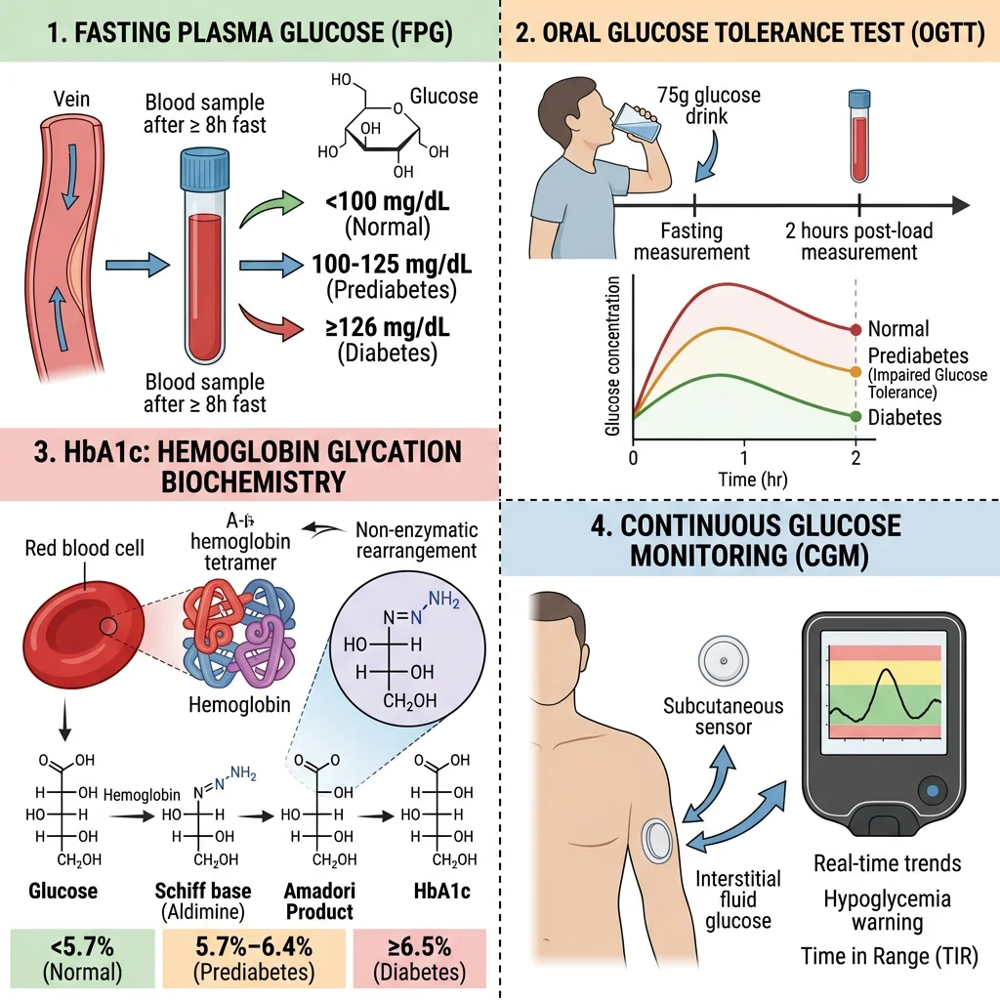
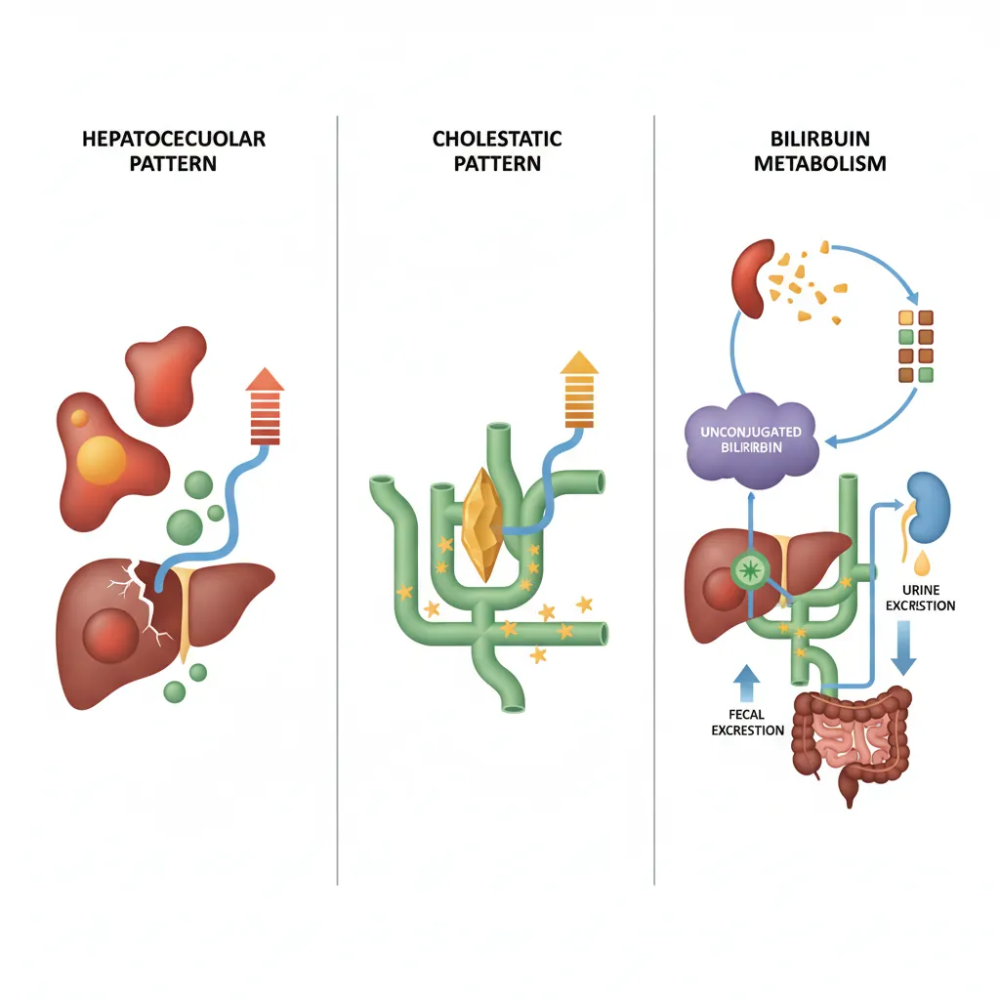
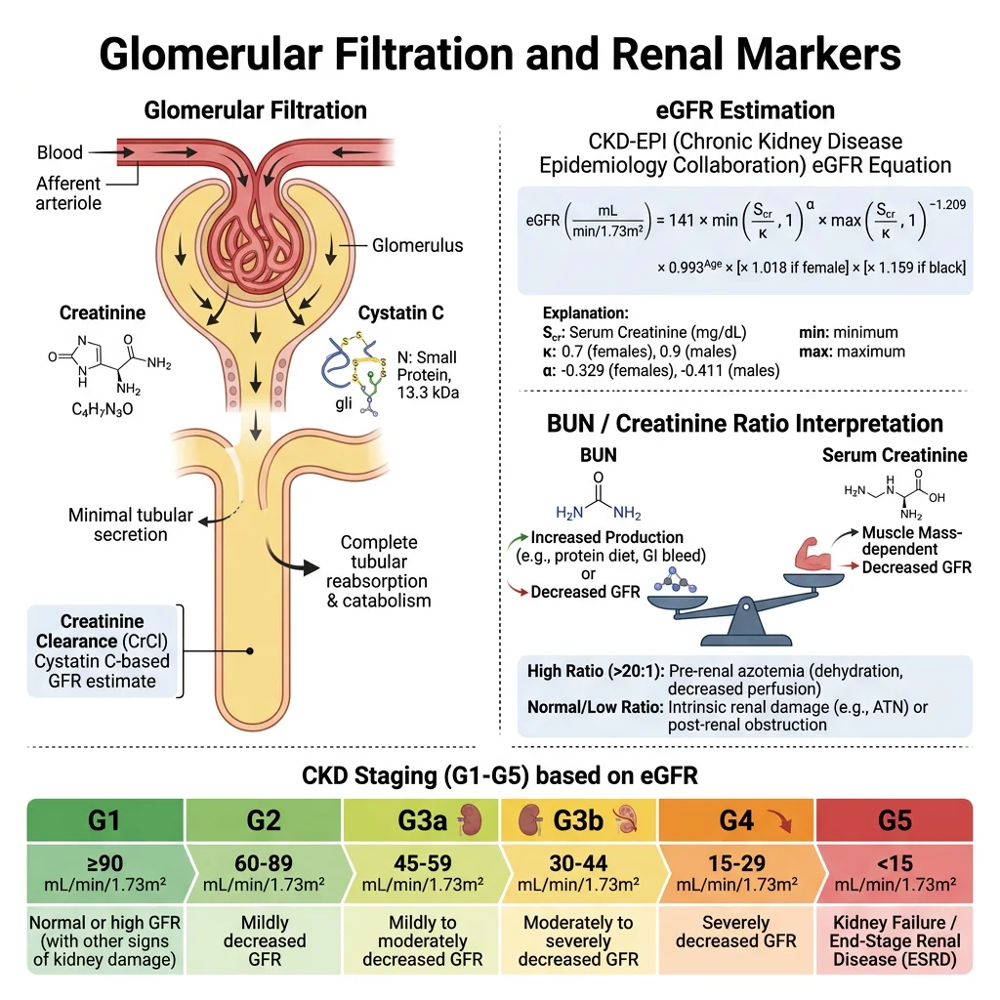
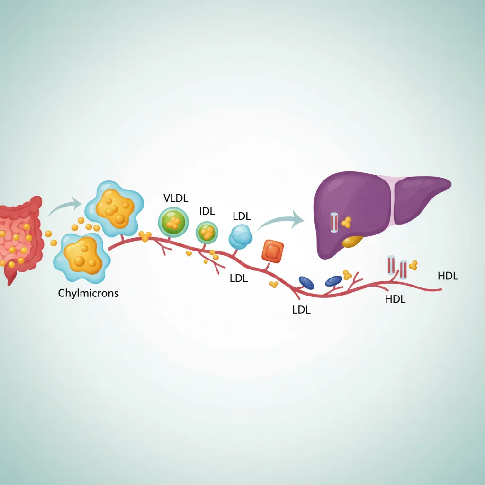
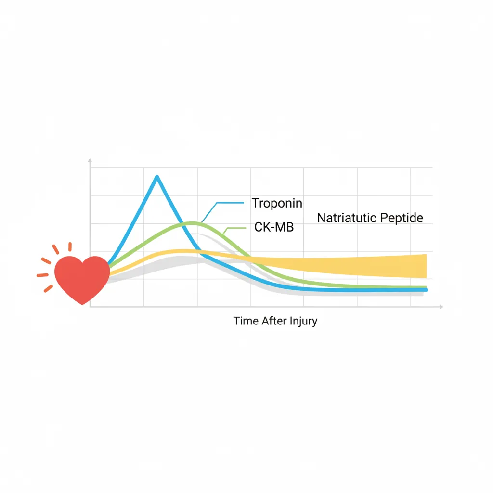

Biochemistry Mastery
Biological Chemistry Fundamentals
Atoms, bonds, functional groups, thermodynamicsWater, pH & Biological Buffers
Water polarity, pH, Henderson-Hasselbalch, blood buffersAmino Acids & Protein Structure
Amino acid classes, peptide bonds, protein foldingEnzymes & Catalysis
Kinetics, Michaelis-Menten, inhibition, regulationCarbohydrates & Lipids
Sugars, glycogen, fatty acids, cholesterol, membranesMetabolism & Bioenergetics
ATP, glycolysis, gluconeogenesis, redox carriersCitric Acid Cycle & Oxidative Phosphorylation
Acetyl-CoA, ETC, ATP synthase, oxygen dependenceSignal Transduction & Cell Communication
GPCRs, kinases, calcium, hormone cascadesNucleic Acids & Gene Expression
DNA, replication, transcription, translation, epigeneticsBrain & Nervous System Biochemistry
Neurotransmitters, ion gradients, myelin, neurodegenerationHeart & Muscle Biochemistry
Cardiac metabolism, actin-myosin, energy systemsLiver Biochemistry
Glucose homeostasis, detox, urea cycle, bileKidney Biochemistry & Acid-Base
pH regulation, ion transport, hormonal functionsEndocrine System Biochemistry
Hormone classes, signaling, glucose & stress controlDigestive System Biochemistry
Gastric acid, enzymes, bile, absorption, microbiomeImmune System Biochemistry
Antibodies, cytokines, complement, oxidative burstAdipose Tissue & Energy Balance
Triglycerides, lipolysis, leptin, obesityTissue-Specific Metabolism
Fed vs fasting, organ fuel selection, starvationMolecular Basis of Disease
Diabetes, cancer metabolism, neurodegenerationClinical Biochemistry & Diagnostics
Blood tests, liver/kidney markers, lipid panelsClinical Biochemistry Principles
Clinical biochemistry (also called clinical chemistry or chemical pathology) applies the principles of biochemistry to the diagnosis, monitoring, and management of disease. Every blood test you've ever had — glucose, cholesterol, liver enzymes, kidney function — is clinical biochemistry in action. The discipline bridges the gap between bench science and bedside practice: molecular understanding of metabolism translates directly into measurable biomarkers that guide clinical decisions.
The Clinical Laboratory Workflow
- Pre-analytical phase (~60–70% of errors): Patient preparation (fasting state, posture, time of day), sample collection (venepuncture technique, correct tube — EDTA, heparin, serum separator), transport conditions (temperature, time to centrifugation), and specimen processing. Haemolysis, lipemia, and icterus are the three most common pre-analytical interferences
- Analytical phase (~15% of errors): The actual measurement — spectrophotometry (enzyme assays, colorimetric reactions), ion-selective electrodes (electrolytes), immunoassays (hormones, tumour markers), chromatography (drugs, amino acids), and mass spectrometry (newborn screening, steroid profiling)
- Post-analytical phase (~20% of errors): Result validation, reference range comparison, delta checks (comparing with patient's previous results), critical value notification, and clinical interpretation. A result is only useful when correctly interpreted in clinical context
Reference Ranges
Understanding Reference Ranges
- Definition: The central 95% of values from a healthy reference population (mean ± 2 SD for normally distributed analytes, or 2.5th–97.5th percentiles). By definition, 5% of healthy people will have "abnormal" results — 2.5% above and 2.5% below the reference range
- Sensitivity vs specificity: A highly sensitive test (few false negatives) is ideal for screening — a negative result reliably excludes disease. A highly specific test (few false positives) is ideal for confirmation — a positive result reliably confirms disease. No test is 100% in both; the trade-off depends on clinical purpose
- Predictive values: Positive predictive value (PPV) and negative predictive value (NPV) depend on disease prevalence. Even a highly specific test produces many false positives when screening low-prevalence populations — a critical concept in clinical biochemistry
- Biological variation: Each analyte has within-individual (CVI) and between-individual (CVG) variation. High individuality index means population-based reference ranges are poor comparators — the patient's own previous results (personal reference range) are more informative. This underpins the concept of "delta checks" in laboratory medicine
Blood Glucose & HbA1c Testing
Glucose is the most commonly measured analyte in clinical biochemistry, and diabetes mellitus is the most common metabolic disease worldwide. Clinical glucose testing ranges from simple point-of-care glucometer readings to sophisticated laboratory-based measurements that diagnose and monitor diabetes.

Glucose Testing Methods
- Fasting plasma glucose (FPG): Measured after 8–12 hours fasting. Normal: <5.6 mmol/L (<100 mg/dL); impaired fasting glucose: 5.6–6.9 mmol/L (100–125 mg/dL); diabetes: ≥7.0 mmol/L (≥126 mg/dL). Uses hexokinase or glucose oxidase enzymatic methods — hexokinase is the reference method (more specific, less prone to interference)
- Oral glucose tolerance test (OGTT): 75g glucose load, measure plasma glucose at 0 and 2 hours. Normal 2h: <7.8 mmol/L; impaired glucose tolerance: 7.8–11.0 mmol/L; diabetes: ≥11.1 mmol/L. The OGTT is more sensitive than FPG for detecting early diabetes and is the diagnostic standard for gestational diabetes
- Random glucose: ≥11.1 mmol/L with classic symptoms (polyuria, polydipsia, weight loss) is diagnostic. Useful in acute settings but less standardised than fasting values
- Continuous glucose monitoring (CGM): Subcutaneous sensors measuring interstitial glucose every 1–5 minutes. Modern CGM (FreeStyle Libre, Dexcom G7) provides time-in-range metrics, trend arrows, and glycaemic variability data that HbA1c cannot capture
HbA1c & Glycated Haemoglobin
The Biochemistry of Glycation
- Mechanism: Glucose non-enzymatically reacts with the N-terminal valine of the haemoglobin β-chain via a Schiff base (reversible aldimine) → Amadori rearrangement (irreversible ketoamine) = HbA1c. The rate of HbA1c formation is directly proportional to average blood glucose concentration over the RBC lifespan (~120 days)
- Clinical utility: HbA1c reflects the weighted mean glucose over 2–3 months (more recent weeks contribute more because younger RBCs predominate). Normal: <5.7% (<39 mmol/mol); pre-diabetes: 5.7–6.4% (39–47 mmol/mol); diabetes: ≥6.5% (≥48 mmol/mol). Target for most diabetics: <7% (<53 mmol/mol)
- Measurement: HPLC (ion-exchange or boronate affinity) is the reference method. All methods are now standardised to the IFCC reference system (mmol/mol) with conversion to DCCT/NGSP units (%): NGSP(%) = [0.09148 × IFCC(mmol/mol)] + 2.152
- Limitations: Any condition affecting RBC lifespan alters HbA1c: haemolytic anaemia, chronic kidney disease, sickle cell disease → falsely low HbA1c; iron deficiency anaemia, splenectomy → falsely high. Haemoglobin variants (HbS, HbC, HbE) may interfere with chromatographic methods. In these patients, fructosamine (glycated albumin — reflects 2–3 week average) is an alternative
The DCCT — Proving HbA1c Matters
The Diabetes Control and Complications Trial (DCCT, 1983–1993) was the landmark randomised controlled trial that definitively proved the link between glycaemic control and diabetic complications. In 1,441 type 1 diabetic patients, intensive insulin therapy achieving lower HbA1c (~7% vs ~9% in conventional therapy) reduced retinopathy by 76%, nephropathy by 50%, and neuropathy by 60%. The subsequent EDIC follow-up demonstrated "metabolic memory" — patients who had achieved better glycaemic control during the trial continued to have fewer complications decades later, even after HbA1c levels converged between groups. The DCCT established HbA1c as the gold standard for monitoring glycaemic control and set the clinical target of <7% that guides diabetes management worldwide.
Liver Function Tests
The "liver function test" (LFT) panel is somewhat misnamed — most components actually measure liver damage (hepatocellular injury or cholestasis) rather than liver function. True synthetic function is assessed by albumin and prothrombin time (PT/INR). The pattern of enzyme elevation tells the clinical story: which enzyme is elevated, how high, and in what combination.

ALT & AST
Transaminases — Markers of Hepatocyte Injury
- ALT (alanine aminotransferase): Cytoplasmic enzyme highly specific to the liver. Catalyses alanine + α-ketoglutarate → pyruvate + glutamate (requires pyridoxal phosphate/vitamin B6 as cofactor). Elevated ALT is the most sensitive marker of hepatocellular damage — even mild elevations (1–3× ULN) may indicate non-alcoholic fatty liver disease (NAFLD), the most common cause of chronic ALT elevation in Western populations
- AST (aspartate aminotransferase): Found in liver (mitochondrial + cytoplasmic), heart, skeletal muscle, kidney, brain. Less liver-specific than ALT. Catalyses aspartate + α-ketoglutarate → oxaloacetate + glutamate
- De Ritis ratio (AST/ALT): Powerful diagnostic tool — AST/ALT <1: hepatocellular damage (viral hepatitis, NAFLD); AST/ALT >2: alcoholic liver disease (alcohol induces mitochondrial AST release and depletes pyridoxal phosphate, reducing ALT activity); AST/ALT >1: progressing to cirrhosis (reduced ALT clearance)
- Magnitude of elevation: Mild (1–5× ULN) → NAFLD, chronic hepatitis, drugs; moderate (5–15× ULN) → acute hepatitis, autoimmune; massive (>15× ULN, often >1,000 IU/L) → ischaemic hepatitis, paracetamol (acetaminophen) toxicity, acute viral hepatitis
GGT & ALP
Cholestatic Markers
- ALP (alkaline phosphatase): Membrane-bound enzyme on the canalicular surface of hepatocytes, also in bone, placenta, and intestine. Elevated in cholestasis (intra- or extrahepatic bile duct obstruction), infiltrative liver disease, and bone disorders. Isoenzyme fractionation (heat stability, electrophoresis) or concurrent GGT measurement distinguishes hepatic from bone origin — if GGT is also elevated, the ALP is hepatic
- GGT (gamma-glutamyl transferase): Canalicular membrane enzyme involved in glutathione metabolism. Extremely sensitive to hepatobiliary disease but not specific — also elevated by alcohol (microsomal enzyme induction), obesity, drugs (phenytoin, barbiturates), pancreatic disease. Most useful as confirming hepatic origin of raised ALP and as a marker of alcohol use
- Cholestatic pattern: ALP and GGT elevated disproportionately to ALT/AST suggests bile duct obstruction (gallstones, pancreatic head tumour) or intrahepatic cholestasis (primary biliary cholangitis, drug-induced). Imaging (ultrasound → MRCP) follows to identify the cause
Bilirubin
Bilirubin Metabolism & Jaundice
- Biochemical pathway: Haem (from senescent RBCs) → biliverdin (by haem oxygenase) → unconjugated bilirubin (by biliverdin reductase) → transported to liver bound to albumin → conjugated with glucuronic acid by UGT1A1 (UDP-glucuronosyltransferase) → excreted in bile → bacterial conversion to urobilinogen (reabsorbed → urobilinogen in urine; or → stercobilin → brown colour of stool)
- Unconjugated hyperbilirubinaemia: Haemolysis (increased production), Gilbert syndrome (~5–8% of population — reduced UGT1A1 activity, benign — mild jaundice during fasting/illness), Crigler-Najjar syndrome (severe UGT1A1 deficiency — neonatal kernicterus risk)
- Conjugated hyperbilirubinaemia: Hepatocellular disease (hepatitis, cirrhosis — impaired excretion), intrahepatic cholestasis, extrahepatic obstruction (gallstones, tumour). Conjugated bilirubin is water-soluble → appears in urine (dark urine is an early sign of obstructive jaundice, while pale stools indicate complete bile duct obstruction)
- Clinical significance: Jaundice becomes visible when total bilirubin exceeds ~50 μmol/L (~3 mg/dL). The unconjugated/conjugated fractionation is the key first step in differential diagnosis — it immediately narrows the diagnostic pathway
| LFT Pattern | ALT/AST | ALP/GGT | Bilirubin | Likely Diagnosis |
|---|---|---|---|---|
| Hepatocellular | ↑↑↑ | ↑ or normal | ↑ (mixed) | Viral hepatitis, drug toxicity, NAFLD |
| Cholestatic | ↑ or normal | ↑↑↑ | ↑ (conjugated) | Gallstones, PBC, drug-induced cholestasis |
| Infiltrative | Normal or ↑ | ↑↑ | Normal | Metastases, granulomatous disease |
| Isolated ↑ bilirubin | Normal | Normal | ↑ (unconjugated) | Gilbert syndrome, haemolysis |
Kidney Function Markers
The kidneys filter ~180 litres of plasma per day, and their function is assessed by measuring substances that are either filtered and not reabsorbed (clearance markers) or produced by the kidney (hormonal/metabolic markers). The central concept is the glomerular filtration rate (GFR) — the volume of plasma filtered per minute — the single best overall index of kidney function.

Creatinine & BUN
Creatinine — The Workhorse Renal Marker
- Biochemistry: Creatinine is produced at a constant rate from the non-enzymatic dehydration of creatine phosphate in skeletal muscle (~1.7% of total creatine pool/day). It is freely filtered by glomeruli, not reabsorbed, and minimally secreted (tubular secretion contributes ~10–15% of urinary creatinine). This makes it a practical, if imperfect, endogenous GFR marker
- Reference range: Males 60–110 μmol/L (0.7–1.2 mg/dL); females 45–90 μmol/L (0.5–1.0 mg/dL). Creatinine is proportional to muscle mass — muscular individuals have higher baseline values; elderly, cachectic patients may have "normal" creatinine despite significantly reduced GFR (the "creatinine-blind range")
- Key limitation: Serum creatinine does not rise above the reference range until GFR has fallen to ~50% of normal — a significant "blind spot". This means substantial kidney damage can be present while creatinine appears normal
Blood Urea Nitrogen (BUN / Urea)
- Biochemistry: Urea is the major end-product of protein catabolism, synthesised in the liver via the urea cycle. Freely filtered, but ~40–50% is passively reabsorbed in the tubules (especially in dehydration → increased reabsorption)
- BUN/creatinine ratio: Normal ~10:1 (in US units). Elevated ratio (>20:1) = pre-renal azotaemia (dehydration, heart failure, GI bleeding → increased urea reabsorption while creatinine remains unaffected). Normal ratio with both elevated = intrinsic renal disease. This ratio is a quick bedside differentiator of pre-renal vs intrinsic kidney injury
- Confounders: Urea rises with high-protein diet, GI bleeding (blood protein digestion), catabolic states, corticosteroids. Falls in liver failure (impaired synthesis) and malnutrition
eGFR & Cystatin C
Estimating Glomerular Filtration Rate
- eGFR equations: The CKD-EPI 2021 equation (creatinine-based, race-free) is now recommended. It estimates GFR from serum creatinine, age, and sex. Normal eGFR: >90 mL/min/1.73m². CKD staging: G1 (≥90, with kidney damage markers) → G2 (60-89) → G3a (45-59) → G3b (30-44) → G4 (15-29) → G5 (<15, kidney failure)
- Cystatin C: A 13-kDa cysteine protease inhibitor produced at a constant rate by all nucleated cells. Freely filtered, completely reabsorbed and catabolised by proximal tubular cells (not returned to blood). Less affected by muscle mass, diet, sex, and age than creatinine — better GFR marker in extremes of body composition (elderly, muscular athletes, amputees, malnutrition)
- Combined equations: CKD-EPI creatinine-cystatin C equation provides the most accurate eGFR estimate. KDIGO guidelines recommend confirmatory cystatin C measurement when creatinine-based eGFR is near a clinical decision threshold (e.g., eGFR 45 vs 55 determines CKD staging and referral)
- Gold standard: Measured GFR using exogenous filtration markers (inulin clearance, iohexol, 51Cr-EDTA) provides the true GFR but is expensive and impractical for routine use — reserved for research and critical clinical decisions (kidney donation assessment)
Lipid Panel Interpretation
The standard lipid panel measures total cholesterol, LDL cholesterol, HDL cholesterol, and triglycerides — the core biochemistry of cardiovascular risk assessment. Understanding the biochemistry behind these numbers is essential for interpreting results and guiding treatment.

Lipoprotein Biochemistry
- Chylomicrons: Largest, least dense. Transport dietary triglycerides from intestine → peripheral tissues. Triglyceride-rich; cleared by lipoprotein lipase (LPL) on capillary endothelium. Remnants are taken up by the liver
- VLDL: Produced by the liver, transport endogenous triglycerides. Successively delipidated by LPL → IDL → LDL
- LDL (low-density lipoprotein): The major carrier of cholesterol to peripheral tissues. Contains a single apolipoprotein B-100 (apoB). Taken up by hepatic LDL receptors (LDLR). When oxidised, taken up by macrophage scavenger receptors → foam cells → atherosclerotic plaque. LDL-C is the primary target for cardiovascular risk reduction
- HDL (high-density lipoprotein): Mediates reverse cholesterol transport — picks up cholesterol from peripheral tissues (via ABCA1 transporter), esterifies it (LCAT enzyme), and delivers it to the liver. Higher HDL-C is associated with lower cardiovascular risk, though pharmacologically raising HDL has not consistently reduced events
| Analyte | Desirable Level | Borderline | High Risk | Biochemical Significance |
|---|---|---|---|---|
| Total Cholesterol | <5.2 mmol/L (<200) | 5.2–6.2 (200–239) | ≥6.2 (≥240) | Sum of all lipoprotein cholesterol fractions |
| LDL-C | <2.6 mmol/L (<100) | 2.6–4.1 (100–159) | ≥4.1 (≥160) | Calculated (Friedewald: TC − HDL − TG/2.2) or direct assay |
| HDL-C | ≥1.6 (≥60) | 1.0–1.3 M / 1.3–1.6 F | <1.0 M (<40) | Low HDL is an independent CV risk factor |
| Triglycerides | <1.7 mmol/L (<150) | 1.7–2.3 (150–199) | ≥2.3 (≥200) | Fasting specimen preferred; very high (>10) → pancreatitis risk |
| Non-HDL-C | <3.4 mmol/L (<130) | 3.4–4.9 (130–189) | ≥4.9 (≥190) | TC minus HDL-C; captures all atherogenic lipoproteins (LDL + VLDL + IDL + Lp(a)) |
Statin Therapy — Biochemical Mechanism
Statins (atorvastatin, rosuvastatin, etc.) inhibit HMG-CoA reductase — the rate-limiting enzyme of endogenous cholesterol synthesis (mevalonate pathway). Reduced intracellular cholesterol activates SREBP-2 transcription factor → upregulates hepatic LDL receptors → increased LDL clearance from blood → 30–50% LDL-C reduction. The PCSK9 pathway provides additional regulation: PCSK9 protein tags LDL receptors for lysosomal degradation. PCSK9 inhibitors (evolocumab, alirocumab — monoclonal antibodies) prevent this degradation → more LDL receptors on hepatocyte surface → additional 50–60% LDL-C reduction on top of statins. The newest agent, inclisiran (siRNA targeting PCSK9 mRNA), achieves similar LDL-C reduction with twice-yearly subcutaneous injections.
Cardiac Biomarkers
Cardiac biomarkers have revolutionised the diagnosis of acute coronary syndromes and heart failure. The evolution from non-specific markers (LDH, CK) to highly cardiac-specific troponins represents one of clinical biochemistry's greatest success stories — enabling rapid, accurate diagnosis of myocardial injury at the emergency department bedside.

Troponin & CK-MB
Troponin — The Gold Standard for Myocardial Infarction
- Biochemistry: The troponin complex (troponin C, I, and T) regulates calcium-mediated actin-myosin interaction in striated muscle. Cardiac troponin I (cTnI) and cardiac troponin T (cTnT) have unique cardiac isoforms not expressed in skeletal muscle — making them exquisitely cardiac-specific. When cardiomyocytes are injured, troponin is released into the bloodstream
- High-sensitivity troponin (hs-cTn): Modern hs-cTn assays detect troponin at 10–100× lower concentrations than earlier generations. They can detect myocardial injury within 1–3 hours of symptom onset (vs 6–12 hours with earlier assays). The 0/1-hour or 0/2-hour rapid rule-out protocols enable safe discharge of low-risk chest pain patients from the ED within hours
- Universal definition of MI: Acute MI requires a rise and/or fall of hs-cTn (demonstrating an acute process) with at least one value above the 99th percentile of a healthy reference population, plus clinical evidence of ischaemia. The key word is dynamic change — a single elevated troponin could be chronic elevation (CKD, heart failure, myocarditis) rather than acute MI
- CK-MB: The creatine kinase MB isoenzyme was the previous gold standard. Still useful for detecting reinfarction (faster clearance than troponin — rises within 3–4 hours, peaks at 24 hours, normalises by 48–72 hours, while troponin remains elevated for 10–14 days)
BNP & NT-proBNP
Natriuretic Peptides — Heart Failure Biomarkers
- Biochemistry: BNP (B-type natriuretic peptide) is synthesised as proBNP in ventricular cardiomyocytes in response to myocardial wall stress (volume/pressure overload). ProBNP is cleaved by corin protease into active BNP (32 amino acids, half-life ~20 minutes) and inactive NT-proBNP (76 amino acids, half-life ~120 minutes). Both are released in equimolar amounts
- Clinical utility: Primary role is ruling out heart failure in dyspnoeic patients. BNP <100 pg/mL or NT-proBNP <300 pg/mL has ~98% negative predictive value for acute heart failure. Higher cut-offs for NT-proBNP are needed in elderly patients and those with renal impairment (NT-proBNP clears renally; BNP clears via natriuretic peptide receptor C and neutral endopeptidase neprilysin)
- Treatment monitoring: Serial NT-proBNP guides heart failure therapy — a >30% reduction from baseline indicates effective treatment; rising levels predict decompensation. The drug sacubitril (neprilysin inhibitor, combined with valsartan as Entresto) raises BNP (by inhibiting its degradation) while reducing NT-proBNP — therefore NT-proBNP is the correct monitoring marker in patients on sacubitril/valsartan
Thyroid Function Tests
Thyroid disorders are the second most common endocrine diseases (after diabetes) and are diagnosed almost entirely by biochemical testing. The thyroid function test panel is an elegant example of negative feedback loop assessment — the relationship between TSH and free thyroid hormones immediately reveals where the axis is disrupted.
The TSH–Free T4 Relationship
- TSH (thyroid-stimulating hormone): The single most important and first-line thyroid test. Secreted by anterior pituitary thyrotrophs in response to hypothalamic TRH. TSH has an inverse log-linear relationship with free T4 — a 2-fold change in free T4 produces ~100-fold change in TSH. This amplification makes TSH exquisitely sensitive to even subtle thyroid dysfunction
- Free T4 (fT4): Only ~0.03% of total T4 is free (unbound to TBG, transthyretin, albumin). Free T4 is the biologically active fraction and is measured by equilibrium dialysis (reference method) or immunoassay (routine). More reliable than total T4, which is affected by TBG changes (pregnancy, oestrogen, liver disease)
- Free T3 (fT3): T3 is 3–5× more potent than T4 at thyroid hormone receptors. Most T3 is produced peripherally by type 1 and type 2 deiodinases converting T4 → T3. Measured when TSH is suppressed but fT4 is normal (T3 thyrotoxicosis)
| Pattern | TSH | Free T4 | Diagnosis | Common Causes |
|---|---|---|---|---|
| Primary hypothyroid | ↑↑ | ↓ | Overt hypothyroidism | Hashimoto's (anti-TPO antibodies), post-thyroidectomy, radioiodine |
| Subclinical hypothyroid | ↑ (4.5–10) | Normal | Subclinical hypothyroidism | Early Hashimoto's, consider treatment if TSH >10 or symptoms |
| Primary hyperthyroid | ↓↓ (<0.1) | ↑ | Overt hyperthyroidism | Graves' disease (TRAb positive), toxic nodule, thyroiditis |
| T3 thyrotoxicosis | ↓↓ | Normal | Check fT3 (will be ↑) | Early Graves', autonomous nodule |
| Central hypothyroid | Low/normal | ↓ | Pituitary/hypothalamic disease | Pituitary tumour, surgery, Sheehan syndrome |
Point-of-Care Testing & Future Directions
Point-of-care testing (POCT) brings the laboratory to the patient — enabling rapid, actionable results at the bedside, in the GP surgery, or even at home. The COVID-19 pandemic massively accelerated POCT adoption, and new technologies are transforming clinical biochemistry from a centralised laboratory discipline to a distributed, real-time monitoring system.
Current & Emerging POCT Technologies
- Established POCT: Blood glucose meters (enzyme-amperometric biosensors — glucose oxidase or glucose dehydrogenase), blood gas analysers (pH, pO2, pCO2, electrolytes, lactate — ion-selective electrodes), INR monitors (CoaguChek — for warfarin patients), pregnancy tests (lateral flow immunoassay — anti-hCG antibodies), urine dipsticks (chemical pads with colour reactions for pH, protein, glucose, ketones, blood, leukocytes, nitrites)
- Rapid lateral flow assays: The COVID-19 rapid antigen test (lateral flow immunoassay) demonstrated mass-scale POCT deployment. Same platform now expanding to influenza, RSV, streptococcal pharyngitis, cardiac troponin, and D-dimer. Sensitivity is lower than central lab assays but adequate for clinical decision-making at point of care
- Miniaturised laboratory platforms: Devices like Abbott i-STAT (handheld, disposable cartridges — comprehensive metabolic panel in 2 minutes from a single drop of blood), Siemens Epoc (blood gases + electrolytes + metabolites), and Piccolo Xpress (full chemistry panel on a centrifugal disc) are enabling emergency department, ICU, and ambulance biochemistry
- Continuous monitoring: Beyond CGM for glucose, emerging continuous analyte sensors target lactate (critical care), ketones (diabetes management), cortisol (stress monitoring), potassium (cardiac surgery), and even troponin (wearable cardiac monitoring). The ultimate vision: real-time, multi-analyte biosensor patches that continuously track metabolic status
- AI-integrated diagnostics: Machine learning algorithms are being integrated with POC devices for image-based diagnostics (microscopy, lateral flow interpretation), predictive analytics (sepsis prediction from POCT data streams), and automated quality control. The convergence of biosensors, wireless connectivity, and AI is creating a new paradigm of "laboratory medicine everywhere"
The Lab-on-a-Chip Revolution
Microfluidic lab-on-a-chip devices integrate sample preparation, biochemical reactions, and detection on a single chip the size of a credit card. These devices use microchannels (10–100 μm diameter) to manipulate nanolitre volumes of blood/body fluids, performing full biochemical panels from a finger-prick sample. Current platforms can perform immunoassays, nucleic acid amplification (PCR), cell counting, and metabolite quantification on a single disposable chip with results in 5–15 minutes. The WHO's "ASSURED" criteria (Affordable, Sensitive, Specific, User-friendly, Rapid, Equipment-free, Deliverable) guide development for global health applications. These devices could bring comprehensive biochemical diagnostics to resource-limited settings, remote communities, and disaster zones — democratising access to laboratory medicine worldwide.
Exercises & Review Questions
Exercise 1: A patient's LFTs show: ALT 450 IU/L (normal <40), AST 200 IU/L, ALP 95 IU/L (normal <120), GGT 35 IU/L (normal <50), bilirubin 30 μmol/L. Interpret this pattern.
Answer: This is a hepatocellular pattern — massively elevated transaminases (ALT >> AST, ratio <1) with normal cholestatic markers (ALP, GGT). The AST/ALT ratio <1 argues against alcoholic liver disease. The magnitude (>10× ULN) is consistent with acute viral hepatitis, drug-induced liver injury (paracetamol, isoniazid), or ischaemic hepatitis. The mild bilirubin elevation reflects hepatocyte dysfunction but no bile duct obstruction. Key next steps: hepatitis A/B/C serology, drug history (paracetamol level if overdose suspected), liver ultrasound. If ALT had been 80 IU/L with AST 160 IU/L (ratio >2), alcoholic hepatitis would be the leading diagnosis.
Exercise 2: Explain why HbA1c may be unreliable in a patient with sickle cell trait and suggest an alternative.
Answer: HbA1c measurement relies on detecting glycated haemoglobin, and abnormal haemoglobin variants can interfere. In sickle cell trait (HbAS): (1) Ion-exchange HPLC methods may produce aberrant peaks from HbS that co-elute with or are misidentified as HbA1c; (2) HbS may have different glycation kinetics; (3) Subtle differences in RBC lifespan in some HbAS individuals may alter the time-weighted glucose average. The alternative is fructosamine (glycated serum albumin) — it reflects average blood glucose over 2–3 weeks (albumin half-life ~21 days) and is unaffected by haemoglobin variants, RBC lifespan, or RBC disorders. Some centres use glycated albumin (%GA) for a similar purpose. Direct glucose measurements (FPG, OGTT) remain valid regardless of haemoglobin status.
Exercise 3: A patient presents to the ED with chest pain. High-sensitivity troponin at 0 hours is 18 ng/L (99th percentile = 14 ng/L). How do you interpret this?
Answer: A single hs-cTn above the 99th percentile (18 > 14 ng/L) indicates myocardial injury but does NOT yet diagnose acute MI. The universal definition of MI requires a rise and/or fall pattern (dynamic change) plus clinical evidence of ischaemia. Many conditions cause chronic troponin elevation: CKD (impaired clearance), heart failure (chronic myocardial stress), myocarditis, pulmonary embolism, sepsis, and even strenuous exercise. The critical next step is a repeat hs-cTn at 1–2 hours (depending on the assay's validated protocol). A significant delta (e.g., ≥5–7 ng/L change at 1 hour for many assays) with consistent clinical features confirms acute MI. A stable value suggests chronic elevation requiring workup but not emergency catheterisation.
Exercise 4: Serum creatinine is 90 μmol/L in a 25-year-old male bodybuilder and a 75-year-old frail woman. Does this mean the same thing?
Answer: Absolutely not — this illustrates the critical limitation of creatinine as a GFR marker. Creatinine production is proportional to muscle mass. The young bodybuilder has high muscle mass and high creatine phosphate turnover, so a creatinine of 90 μmol/L likely reflects a normal or even high GFR. The frail elderly woman has very low muscle mass (sarcopenia), so her creatinine production is much lower — a creatinine of 90 μmol/L may actually represent significantly reduced GFR (potentially CKD stage 3 or worse). The eGFR equation partially adjusts for age and sex, but cannot fully account for extremes of body composition. In this situation, cystatin C (produced by all nucleated cells, independent of muscle mass) would be a more accurate GFR marker for both patients. This is the "creatinine-blind range" problem — equally abnormal kidney function can produce the same "normal-looking" creatinine in different patients.
Exercise 5: A patient's thyroid function shows: TSH 0.02 mIU/L (low), fT4 22 pmol/L (normal), fT3 9.5 pmol/L (high). What is the diagnosis?
Answer: This is T3 thyrotoxicosis — suppressed TSH with normal fT4 but elevated fT3. The suppressed TSH confirms that the pituitary senses excess thyroid hormone, even though fT4 is still within range. This pattern occurs in: (1) Early Graves' disease — increased preferential T3 synthesis by the stimulated thyroid; (2) Autonomous thyroid nodule — nodules often produce T3 preferentially; (3) Iodine-deficient regions — relative T3 excess due to preferential T3 synthesis when iodine is limited. This is precisely why fT3 should be measured when TSH is suppressed but fT4 is normal — if only TSH and fT4 were checked, the diagnosis would be missed. Treatment depends on the cause: antithyroid drugs (Graves'), radioiodine, or surgery.
Clinical Diagnostics Worksheet
Clinical Biochemistry Study Guide
Organise your understanding of clinical biochemistry tests and interpretation. Download as Word, Excel, or PDF.
Conclusion
Clinical biochemistry is where molecular understanding meets patient care. Every blood test — from a simple glucose to a high-sensitivity troponin — is grounded in the biochemistry you've studied throughout this series: enzyme kinetics (transaminase assays), protein structure (haemoglobin glycation), metabolic pathways (lipid metabolism, urea cycle), and signal transduction (hormone-receptor interactions). The discipline continues to evolve with high-sensitivity assays, point-of-care devices, and AI-integrated diagnostics, but the fundamental principle remains: understanding the biochemistry behind the test is the key to correct clinical interpretation.